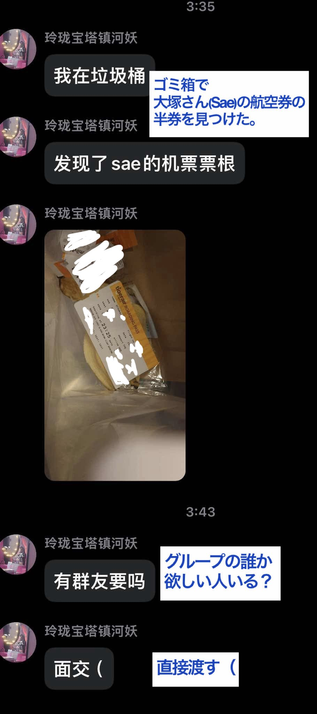
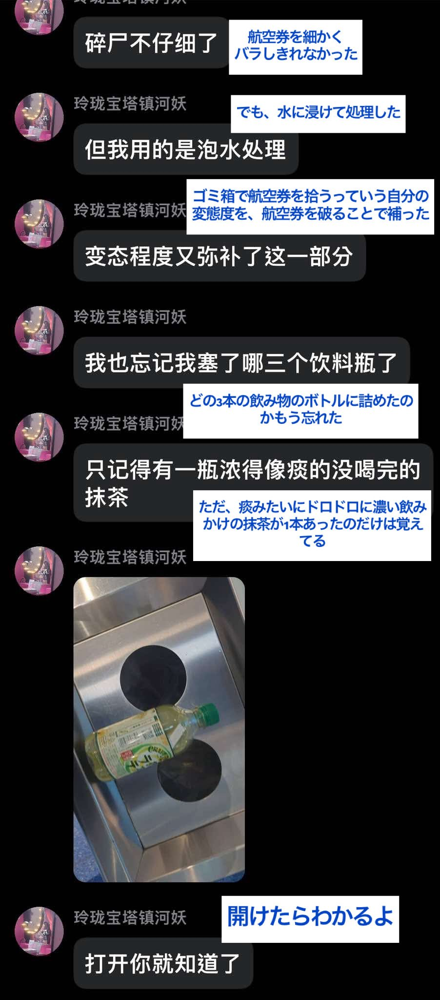
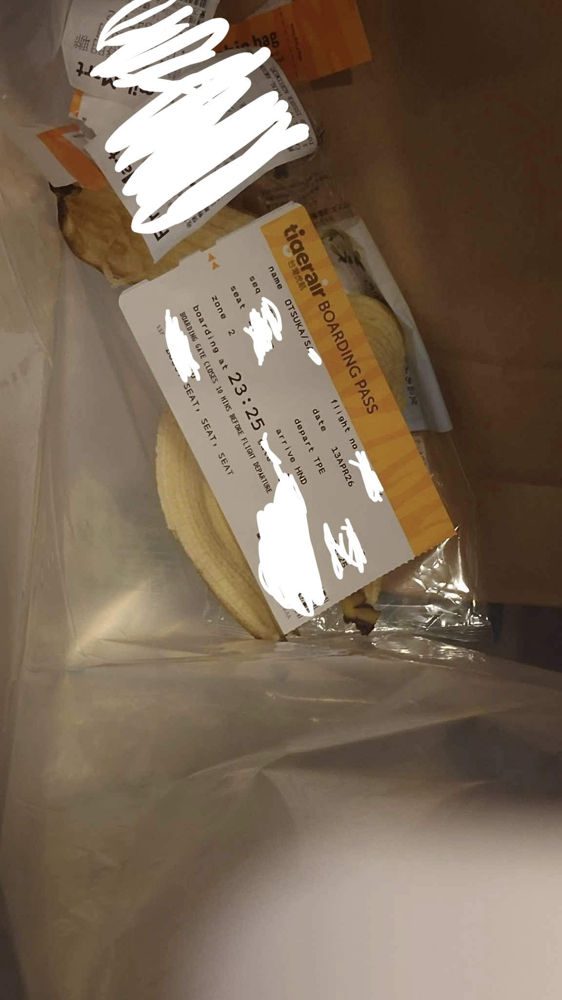

穗_我爱你🏳️⚧️💛🤍💜🖤
@Sui_aini
恶心爆了，这种人就应该狠狠曝光



エリザベス Elizabeth （REST)
@Eliza_BigSwiss
#拡散希望 #バンドリ
先日のBanG Dream! Special LIVE in TAIPEIにて、キャストの安全を脅かす事案が発生しました。
現在日本に留学中の中国籍の人物が、羽田空港のゴミ箱から大塚紗英さんの航空券の半券を拾い上げ、その画像をSNSに公開しました。 https://t.co/c1OdmtPy0r